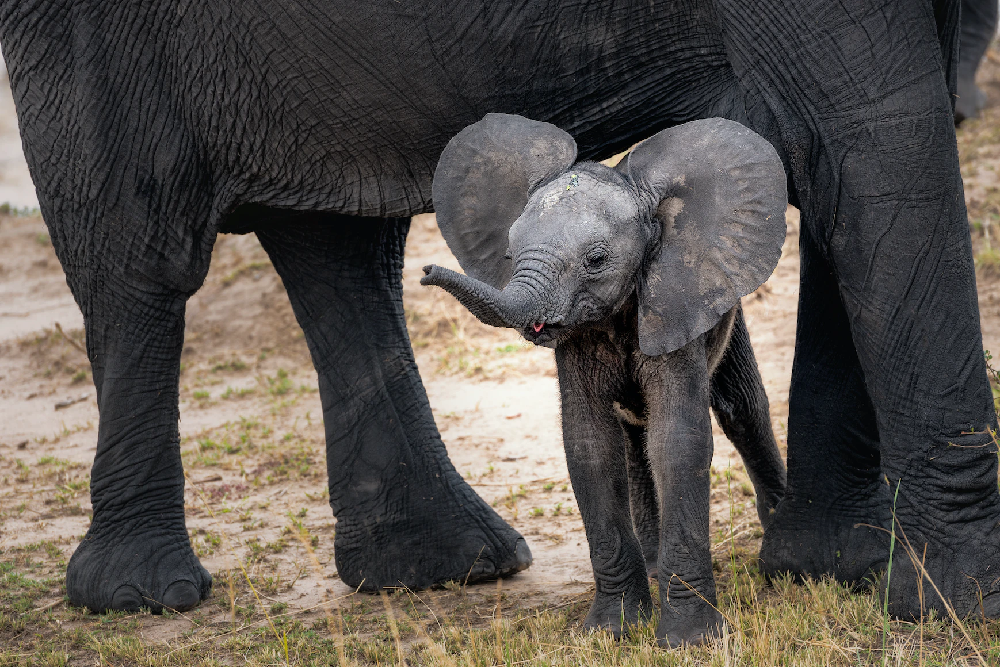

About African Elephants
African elephants are the largest living terrestrial animals that walk the Earth.
African elephants (Loxodonta) are a genus comprised of two living species,
the African savanna (or bush) elephant (L.africana) and the African forest elephant (L.cyclotis). Elephants are a matriarchal species, meaning they move in female led groups.
Savanna elephants are generally 10-13 feet tall while forest elephants are generally smaller at 8-10 feet tall. Savanna elephants live in a variety of habitats ranging
from wooded savannas to forests and deserts. Forest elephants prefer to live in dense rain forests, they also sport thinner and straighter tusks than those of savanna elephants.
Baby African Elephants
Before birth, African elephants are destined to be big. Female African elephants have the longest gestation period of all mammals, lasting up to 23 months!
At the time of thier birth, other female elephants in the herd trumpet to announce the arrival of a little one.
Baby elephants, called calves, can weigh around 200 lbs (91 kg) and stand at 3 feet (1m) tall at birth. Baby elephants are intelligent and fun-loving.
For the first few months of their lives, they live by their mother's side and comsume as much as 3 gallons of their mother's milk per day.
Elephants are a matriarchal species, meaning they move in female led groups. Calves are reared by their mothers and other female elephants in their herd.
Though, baby elephants are generally closest to their mothers, learning social behaviors and adapting skills from them directly. (Fun fact: baby elephants often suck on the tips of trunks for comfort, much like human babies suck their thumbs)
The African Elephant Diet
African elephants have a diet that mostly consists of vegitation.
Here's a list of some of the African elephants' favorite foods
- Twigs
- Roots
- Fruit
- Grasses
- Tree bark
- Shrubs
- Flowers
- Leaves

What African Elephants Do for Fun
- Mud baths
Elephants love taking mud baths, maybe not just because of how thrilling it is to throw mud around, it also protects their skin!
Young African elephants can often be spotted playing and rolling around with their friends in mud. Mud cools the elephant's skin as they
wander around in the hot sun. Elephants can even flap their ears to keep cool!
- Sparring
Sometimes young African elephants can be seen wrestling with one another. They usually do this near banks of water where they can keep cool,
and spray each other of course. Older elephants also engage in these teasing behaviors when courting.
- Socializing
Elephants are social creatures, and of course they make fun out of it. They communicate with sounds and movement, often entwining their trunks
in a manner that seems like a hand shake. Biologists believe that elephants use their trunks to greet other elephants because, through them, they can smell another
elephant and learn more about them. (Fun fact: Elephants have as many as 40,000 muscles in their trunks!). Their trunks can produce a variety of sounds.
Mother elephants often make a soft rumbling sound when caressing their calves.

How African Elephants Handle Death
African Forest elephants treat death like something sacred. African elephants are known
to show signs of grief toward passed friends and relatives. They even revisit the sites and bones of passed loved ones years later.
African elephants have also been seen mourning the deaths of stillborn calves, and calves that have died only months after being born.
The elephants' apparent empathy adds more to the belief that their bonds are deep and intimate.

Humans Have Endangered the African Elephant
- Poaching
The African elephant has its own predators like most other creatures,
including leopards, jaguars, and lions. Their size and herds usually protect them well against these predators. The largest threat to African elephants, and elephants
at large, is human poachers. Humans have been the common denomonator in endangering several wildlife species. African elephants are targeted by poachers mainly
for their tusks. Elephant tusks are composed of a hard, off-white material that humans have glorified and named ivory. Human's greed for ivory has led to the mass hunting and slaugtering of elephants.
Humans use ivory for various frivolous reasons including jewelry and ornaments. Ivory trafficking is now illegal, though it still occurs thousands of times a year. One of the largest markets
for ivory today exists in China. Ivory has even been used to bribe government officials due to its rarity.
To put the damage in perspective, before Europeans began colonizing Africa, there were as many as 26 million African elephants. By the early 20th century, there were 10 million African elephants. Today, there
are around 415,000 African elephants. The African savanna elephant is currently listed
as endangered, while African forest elephants are listed as critically endangered.
- Habitat Loss
Humans are also responsible for the deforestation that hinders African elephants. As the population in Africa increases, more and more of the land that elephants once grazed on
is converted to agricultural and residential land. This major loss of habitat is the reason for more human-elephant interactions today. This is dangerous for elephants and
humans because elephants are attracted to the crops, which makes humans and elephants vulnerable to being killed in the conflict.
Why African Elephants Are Vital to Their Ecosystems
Both species of African elephants play a large role in maintaining the biodiversity in their ecosystems.
Forest elephants in particular, live in dense forests in the Congo Basin where their digestive systems are ideal for preparing certain seeds for germination.
The African forest elephant is the most frugivorous elephant that lives today. They consume a larger variety of fruits than any other elephant species. The seeds of these
fruit trees pass through their digestive tract and sit in their dung until the conditions are right for them to grow. Since elephants travel frequently, the seeds that germinate
in their dung travel far and wide. This dispersion of seeds makes African elephants important gardeners for their ecosystems.